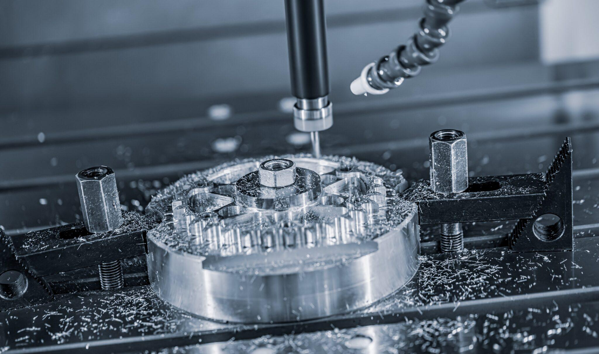
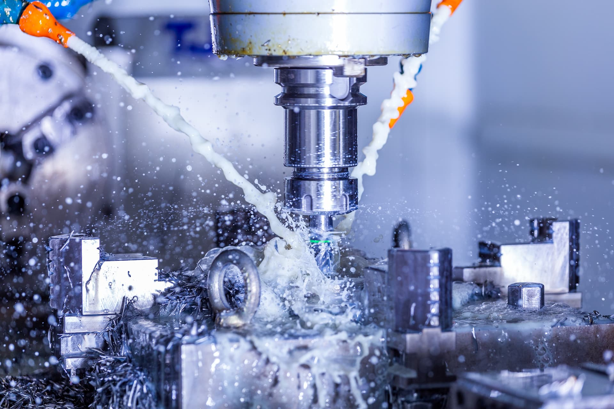

Nos réalisations
Découvrez une sélection de projets représentatifs de notre savoir‑faire en mécanique de précision et en outillage pour presses mécaniques. Chaque réalisation est conçue sur mesure, en tenant compte des contraintes techniques, des matériaux et des exigences propres à chaque client.
Notre approche
- Analyse des contraintes techniques et fonctionnelles
- Choix des matériaux adaptés à l’usage final
- Fabrication sur mesure selon les tolérances requises
- Contrôle qualité systématique avant livraison
Types de projets réalisés
Outillage de découpe
Outils complets, poinçons, matrices, éléments de guidage.
Pièces de précision
Pièces unitaires ou petites séries à tolérances serrées.
Prototypes
Développement rapide de pièces techniques pour essais.
Éléments techniques
Composants mécaniques pour machines spéciales.
Exemples de projets

Outillage de découpe de précision
Conception et réalisation d’un outil de découpe pour presse mécanique.

Pièces usinées en acier trempé
Usinage et rectification de pièces en acier trempé, finition micrométrique.
Vous avez un projet ?
Nous étudions votre besoin et vous proposons des solutions adaptées.
Nous contacter